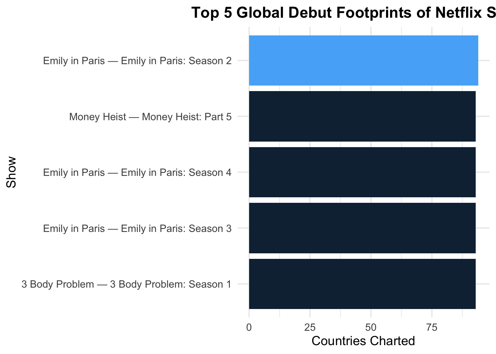
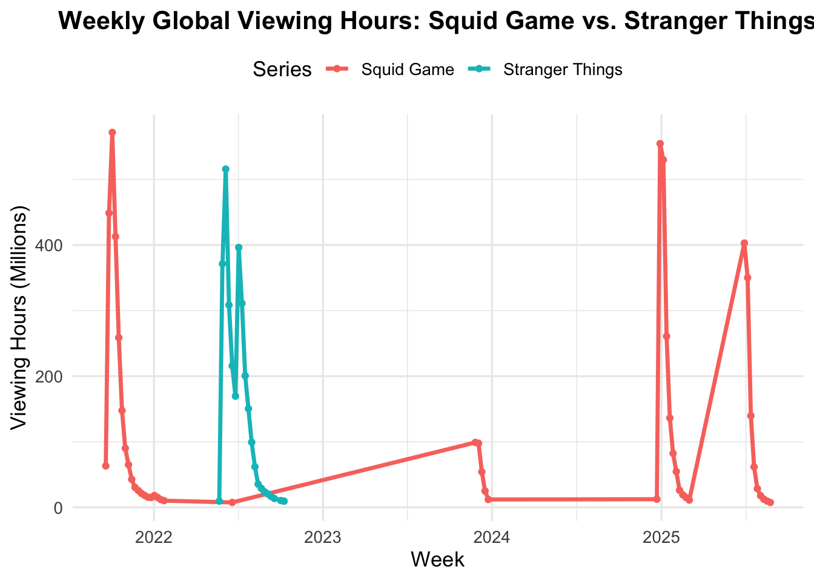
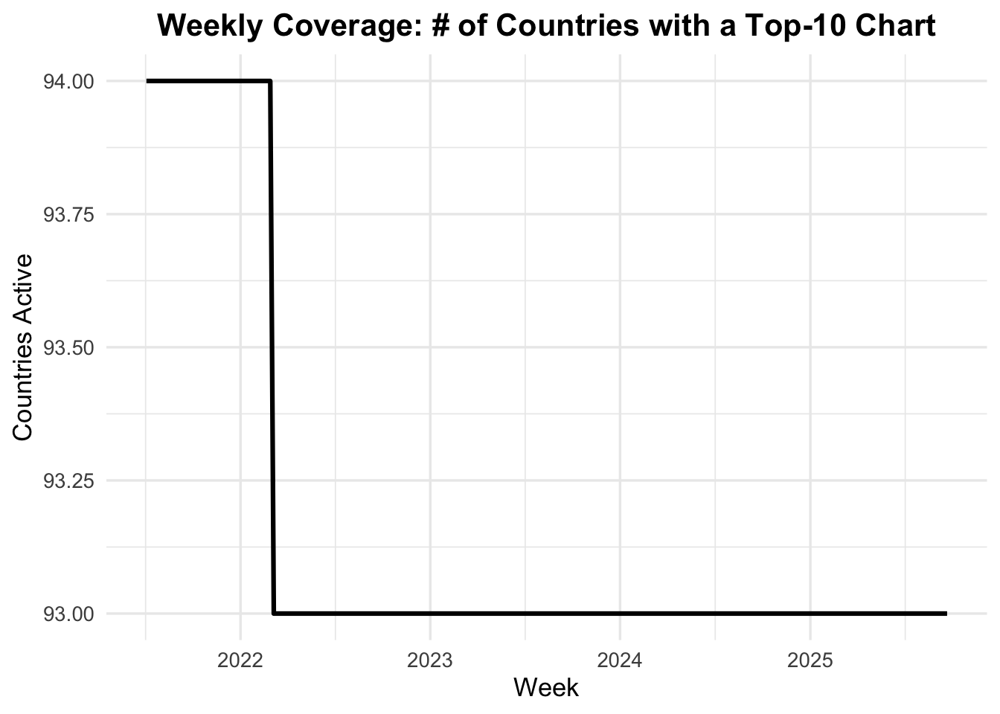

Code
# install.packages(c("readr","dplyr"), dependencies = TRUE) # run once if needed
library(readr)
library(dplyr)Exploring the Most Popular Programming on Netflix
Arati Kalor
October 3, 2025
dir.create(file.path("data", "mp01"), showWarnings = FALSE, recursive = TRUE)
GLOBAL_TOP_10_FILENAME <- file.path("data", "mp01", "global_top10_alltime.tsv")
COUNTRY_TOP_10_FILENAME <- file.path("data", "mp01", "country_top10_alltime.tsv")
download_safely <- function(url, dest) {
tryCatch({
download.file(url, destfile = dest, mode = "wb")
}, error = function(e) {
m <- try(download.file(url, destfile = dest, mode = "wb", method = "curl"), silent = TRUE)
if (inherits(m, "try-error")) {
download.file(url, destfile = dest, mode = "wb", method = "wininet")
}
})
}
if (!file.exists(GLOBAL_TOP_10_FILENAME)) {
download_safely("https://www.netflix.com/tudum/top10/data/all-weeks-global.tsv",
GLOBAL_TOP_10_FILENAME)
}
if (!file.exists(COUNTRY_TOP_10_FILENAME)) {
download_safely("https://www.netflix.com/tudum/top10/data/all-weeks-countries.tsv",
COUNTRY_TOP_10_FILENAME)
}Rows: 8,840
Columns: 9
$ week <date> 2025-09-21, 2025-09-21, 2025-09-21, 2025-0…
$ category <chr> "Films (English)", "Films (English)", "Film…
$ weekly_rank <dbl> 1, 2, 3, 4, 5, 6, 7, 8, 9, 10, 1, 2, 3, 4, …
$ show_title <chr> "The Wrong Paris", "KPop Demon Hunters", "I…
$ season_title <chr> "N/A", "N/A", "N/A", "aka Charlie Sheen: Se…
$ weekly_hours_viewed <dbl> 38900000, 35400000, 14400000, 21800000, 109…
$ runtime <dbl> 1.7833, 1.6667, 1.8833, 3.0333, 1.7000, 1.5…
$ weekly_views <dbl> 21800000, 21200000, 7600000, 7200000, 64000…
$ cumulative_weeks_in_top_10 <dbl> 2, 14, 1, 2, 2, 4, 4, 1, 1, 1, 1, 2, 5, 1, …Rows: 411,760
Columns: 8
$ country_name <chr> "Argentina", "Argentina", "Argentina", "Arg…
$ country_iso2 <chr> "AR", "AR", "AR", "AR", "AR", "AR", "AR", "…
$ week <date> 2025-09-21, 2025-09-21, 2025-09-21, 2025-0…
$ category <chr> "Films", "Films", "Films", "Films", "Films"…
$ weekly_rank <dbl> 1, 2, 3, 4, 5, 6, 7, 8, 9, 10, 1, 2, 3, 4, …
$ show_title <chr> "The Mule", "The Wrong Paris", "KPop Demon …
$ season_title <chr> "N/A", "N/A", "N/A", "N/A", "N/A", "N/A", "…
$ cumulative_weeks_in_top_10 <dbl> 1, 2, 14, 1, 1, 1, 2, 1, 5, 1, 2, 1, 7, 1, …Rows: 8,840
Columns: 9
$ week <date> 2025-09-21, 2025-09-21, 2025-09-21, 2025-0…
$ category <chr> "Films (English)", "Films (English)", "Film…
$ weekly_rank <dbl> 1, 2, 3, 4, 5, 6, 7, 8, 9, 10, 1, 2, 3, 4, …
$ show_title <chr> "The Wrong Paris", "KPop Demon Hunters", "I…
$ season_title <chr> "N/A", "N/A", "N/A", "aka Charlie Sheen: Se…
$ weekly_hours_viewed <dbl> 38900000, 35400000, 14400000, 21800000, 109…
$ runtime <dbl> 1.7833, 1.6667, 1.8833, 3.0333, 1.7000, 1.5…
$ weekly_views <dbl> 21800000, 21200000, 7600000, 7200000, 64000…
$ cumulative_weeks_in_top_10 <dbl> 2, 14, 1, 2, 2, 4, 4, 1, 1, 1, 1, 2, 5, 1, …Rows: 8,840
Columns: 9
$ week <date> 2025-09-21, 2025-09-21, 2025-09-21, 2025-0…
$ category <chr> "Films (English)", "Films (English)", "Film…
$ weekly_rank <dbl> 1, 2, 3, 4, 5, 6, 7, 8, 9, 10, 1, 2, 3, 4, …
$ show_title <chr> "The Wrong Paris", "KPop Demon Hunters", "I…
$ season_title <chr> NA, NA, NA, "aka Charlie Sheen: Season 1", …
$ weekly_hours_viewed <dbl> 38900000, 35400000, 14400000, 21800000, 109…
$ runtime <dbl> 1.7833, 1.6667, 1.8833, 3.0333, 1.7000, 1.5…
$ weekly_views <dbl> 21800000, 21200000, 7600000, 7200000, 64000…
$ cumulative_weeks_in_top_10 <dbl> 2, 14, 1, 2, 2, 4, 4, 1, 1, 1, 1, 2, 5, 1, …Rows: 411,760
Columns: 8
$ country_name <chr> "Argentina", "Argentina", "Argentina", "Arg…
$ country_iso2 <chr> "AR", "AR", "AR", "AR", "AR", "AR", "AR", "…
$ week <date> 2025-09-21, 2025-09-21, 2025-09-21, 2025-0…
$ category <chr> "Films", "Films", "Films", "Films", "Films"…
$ weekly_rank <dbl> 1, 2, 3, 4, 5, 6, 7, 8, 9, 10, 1, 2, 3, 4, …
$ show_title <chr> "The Mule", "The Wrong Paris", "KPop Demon …
$ season_title <chr> NA, NA, NA, NA, NA, NA, NA, NA, NA, NA, "Ma…
$ cumulative_weeks_in_top_10 <dbl> 1, 2, 14, 1, 1, 1, 2, 1, 5, 1, 2, 1, 7, 1, …[1] 0[1] TRUE[1] 0[1] TRUE# Be explicit about packages
library(DT); library(dplyr); library(stringr)
# Helper: Title Case column names for display only
format_titles <- function(df){
colnames(df) <- colnames(df) |>
stringr::str_replace_all("_", " ") |>
stringr::str_to_title()
df
}
# Build a small display table
tbl <- GLOBAL_TOP_10 |>
head(n = 20) |>
dplyr::mutate(season_title = ifelse(is.na(season_title), "—", season_title)) |>
format_titles()
# Show the exact column names so we can verify
print(names(tbl))[1] "Week" "Category"
[3] "Weekly Rank" "Show Title"
[5] "Season Title" "Weekly Hours Viewed"
[7] "Runtime" "Weekly Views"
[9] "Cumulative Weeks In Top 10"# Robust selection for the two numeric columns to round
normalize <- function(x) gsub("[^a-z]", "", tolower(x))
targets <- c("weeklyhoursviewed", "weeklyviews")
idx <- which(normalize(names(tbl)) %in% targets)
DT::datatable(tbl, options = list(searching = FALSE, info = FALSE)) |>
DT::formatRound(idx, digits = 0)tbl_rand <- GLOBAL_TOP_10 |>
dplyr::slice_sample(n = 20) |>
dplyr::mutate(season_title = ifelse(is.na(season_title), "—", season_title)) |>
format_titles()
normalize <- function(x) gsub("[^a-z]", "", tolower(x))
targets <- c("weeklyhoursviewed", "weeklyviews")
idx <- which(normalize(names(tbl_rand)) %in% targets)
DT::datatable(tbl_rand, options = list(searching = FALSE, info = FALSE)) |>
DT::formatRound(idx, digits = 0)Netflix shows viewing activity in 94 countries.
The non-English film with the longest global Top-10 run is All Quiet on the Western Front with 23 weeks.
GLOBAL_TOP_10 |>
filter(category == "Films (Non-English)") |>
group_by(show_title) |>
summarise(max_cum_weeks = max(cumulative_weeks_in_top_10, na.rm = TRUE), .groups = "drop") |>
arrange(desc(max_cum_weeks)) |>
slice_head(n = 10) |>
format_titles() |>
datatable(caption = "Top Non-English Films by Cumulative Weeks in Global Top 10",
options = list(pageLength = 10, searching = FALSE, info = FALSE))longest_film <- GLOBAL_TOP_10 |>
filter(category %in% c("Films (English)", "Films (Non-English)")) |>
mutate(runtime_minutes = round(60 * runtime)) |>
filter(!is.na(runtime_minutes)) |>
group_by(show_title) |>
summarise(max_runtime_min = max(runtime_minutes), .groups = "drop") |>
arrange(desc(max_runtime_min)) |>
slice(1)The longest film to reach the global Top 10 is Pushpa 2: The Rule (Reloaded Version) at 224 minutes. (Older entries may lack runtime.)
category_leaders <- GLOBAL_TOP_10 |>
dplyr::group_by(category, show_title) |>
dplyr::summarise(total_hours = sum(weekly_hours_viewed, na.rm = TRUE),
.groups = "drop_last") |>
dplyr::slice_max(total_hours, n = 1, with_ties = FALSE) |>
dplyr::ungroup() |>
dplyr::arrange(category)
tbl <- format_titles(category_leaders)
DT::datatable(tbl,
caption = "Per-category leader by cumulative global hours",
options = list(pageLength = 10, searching = FALSE, info = FALSE)) |>
DT::formatRound("Total Hours", 0)tv_country <- COUNTRY_TOP_10 |>
filter(category == "TV") |>
select(country_name, week, show_title) |>
arrange(country_name, show_title, week)
tv_streaks <- tv_country |>
group_by(country_name, show_title) |>
mutate(prev_week = lag(week),
new_block = if_else(is.na(prev_week) | week != prev_week + weeks(1), 1L, 0L),
block_id = cumsum(coalesce(new_block, 0L))) |>
group_by(country_name, show_title, block_id) |>
summarise(streak_weeks = n(), start_week = min(week), end_week = max(week), .groups = "drop") |>
arrange(desc(streak_weeks)) |>
slice(1)The longest TV Top-10 run was Pablo Escobar, el patrón del mal in Colombia for 102 consecutive weeks (from 2021-07-04 to 2023-06-11).
The country with limited history is Russia, with 35 weeks recorded; the last week observed is 2022-02-27.
Across all seasons, Squid Game has accumulated 5,310,000,000 hours of global viewing.
red_2021 <- GLOBAL_TOP_10 |>
filter(show_title == "Red Notice", lubridate::year(week) == 2021)
# Use stated runtime 1h58m when needed
runtime_hours_rednotice <- 118/60
red_2021_views_est <- red_2021 |>
summarise(approx_views = sum(weekly_hours_viewed, na.rm = TRUE) / runtime_hours_rednotice) |>
pull(approx_views) |>
round()In 2021, Red Notice (runtime 118 minutes) received approximately 201,732,203 views.
us_films <- COUNTRY_TOP_10 |>
filter(country_name == "United States", category == "Films")
us_first <- us_films |>
group_by(show_title) |>
summarise(first_week = min(week),
debut_rank = weekly_rank[which.min(week)],
.groups = "drop")
us_hit1 <- us_films |>
group_by(show_title) |>
summarise(ever_num1 = any(weekly_rank == 1),
last_num1week = if(any(weekly_rank==1)) max(week[weekly_rank==1]) else as.Date(NA),
.groups = "drop")
us_climbers <- inner_join(us_first, us_hit1, by = "show_title") |>
filter(debut_rank > 1, ever_num1)
n_us_climbers <- nrow(us_climbers)
most_recent_climber <- us_climbers |> arrange(desc(last_num1week)) |> slice(1)45 films reached #1 in the US after debuting below #1. The most recent was KPop Demon Hunters on the week of 2025-09-14.
tv_countries <- COUNTRY_TOP_10 |>
filter(category == "TV") |>
mutate(season_key = ifelse(is.na(season_title), show_title,
paste0(show_title, " — ", season_title)))
debut_weeks <- tv_countries |>
group_by(season_key) |>
summarise(global_debut_week = min(week), .groups = "drop")
debut_footprint <- tv_countries |>
inner_join(debut_weeks, by = "season_key") |>
filter(week == global_debut_week) |>
group_by(season_key, global_debut_week) |>
summarise(countries_charted = n_distinct(country_name), .groups = "drop") |>
arrange(desc(countries_charted)) |>
slice(1)The widest debut footprint was Emily in Paris — Emily in Paris: Season 2, charting in 94 countries on its debut week (2021-12-26).
library(ggplot2)
# Create dataset of debut footprints (Top 5 only for clarity)
debut_footprint_data <- tv_countries |>
inner_join(debut_weeks, by = "season_key") |>
filter(week == global_debut_week) |>
group_by(season_key, global_debut_week) |>
summarise(countries_charted = n_distinct(country_name), .groups = "drop") |>
arrange(desc(countries_charted)) |>
slice_head(n = 5)
# Plot
ggplot(debut_footprint_data,
aes(x = reorder(season_key, countries_charted),
y = countries_charted, fill = countries_charted)) +
geom_col(show.legend = FALSE) +
coord_flip() +
labs(title = "Top 5 Global Debut Footprints of Netflix Shows",
x = "Show", y = "Countries Charted") +
theme_minimal(base_size = 13) +
theme(plot.title = element_text(face = "bold", hjust = 0.5))
Debut footprints across top shows
As Netflix readies the fifth and final season of Stranger Things for late 2025, the franchise’s first four seasons have already generated a remarkable global footprint. Across all seasons, viewers have watched a combined 2,967,980,000 hours worldwide. The series has demonstrated exceptional staying power with 19 weeks in Netflix’s Global Top 10 to date, and it has charted in 93 countries, underscoring its broad international appeal. Among English-language TV series on Netflix, Stranger Things ranks 1 by total hours viewed, placing it alongside the service’s most iconic television hits. With its final season approaching, Hawkins’ last stand is set to be one of the year’s most anticipated streaming events.
Netflix’s recent surge in India underscores the platform’s ability to captivate audiences in the world’s most populated country. Hindi-language programming has emerged as a cornerstone of this success, with titles like Queen of Tears logging 653,900,000 hours of viewing. Unlike their U.S. performance, these titles achieved massive popularity in India while remaining absent from the American Top 10 — clear evidence of strong regional demand.
By extrapolating Hindi-language viewership as primarily India-based, Netflix estimates a potential customer base of 156 million subscribers, cementing India as one of its fastest-growing markets. Long-term growth trends show sustained weekly chart appearances — with Hindi titles occupying the Top 10 in India for 18 consecutive weeks - pointing to continued demand for locally produced stories.
“As India embraces streaming entertainment, Netflix is proud to be the home of Hindi-language blockbusters that resonate globally,” said a Netflix spokesperson. “This growth demonstrates our commitment to investing in original content and delivering unmatched viewing experiences for Indian audiences.”
Netflix’s non-English programming has cemented its place at the heart of global entertainment. Leading the charge is Squid Game, with viewers logging 5,310,000,000 hours worldwide across its seasons—making it the single most-watched non-English series in Netflix history. The show not only held the global Top 10 for 32 weeks, but also charted in 82 countries in its debut week, underscoring its truly international appeal.
While Squid Game remains the crown jewel, other series such as Money Heist highlight the growing dominance of non-English productions. Collectively, these shows are challenging long-standing English-language hits like Stranger Things, which itself logged 2,967,980,000 hours, proving that global audiences are increasingly embracing stories told in their own languages.
With record-breaking engagement and cultural influence, Netflix’s investment in diverse, non-English originals is shaping the future of streaming—bringing local voices to worldwide screens.
library(ggplot2)
# Prepare weekly totals for both series
squid_trend <- GLOBAL_TOP_10 |>
filter(grepl("^Squid Game", show_title)) |>
group_by(week) |>
summarise(hours = sum(weekly_hours_viewed, na.rm = TRUE), .groups = "drop") |>
mutate(series = "Squid Game")
stranger_trend <- GLOBAL_TOP_10 |>
filter(grepl("^Stranger Things", show_title)) |>
group_by(week) |>
summarise(hours = sum(weekly_hours_viewed, na.rm = TRUE), .groups = "drop") |>
mutate(series = "Stranger Things")
trend_df <- bind_rows(squid_trend, stranger_trend)
# Plot
ggplot(trend_df, aes(x = week, y = hours/1e6, color = series)) +
geom_line(size = 1.2) +
geom_point(size = 1.5) +
labs(title = "Weekly Global Viewing Hours: Squid Game vs. Stranger Things",
x = "Week",
y = "Viewing Hours (Millions)",
color = "Series") +
theme_minimal(base_size = 13) +
theme(plot.title = element_text(face = "bold", hjust = 0.5),
legend.position = "top")
Squid Game surged to unprecedented weekly viewing peaks, while Stranger Things showed a steadier long-term engagement pattern. This contrast highlights how Netflix originals succeed through both short-term global hype and long-term sustained fandom
library(dplyr)
library(ggplot2)
active_countries_ts <- COUNTRY_TOP_10 |>
group_by(week) |>
summarise(active_countries = n_distinct(country_name), .groups = "drop")
ggplot(active_countries_ts, aes(x = week, y = active_countries)) +
geom_line(linewidth = 1.1) +
labs(title = "Weekly Coverage: # of Countries with a Top-10 Chart",
x = "Week", y = "Countries Active") +
theme_minimal(base_size = 13) +
theme(plot.title = element_text(face = "bold", hjust = 0.5))
Weekly coverage remains broad, with brief dips tied to specific market conditions; overall, Netflix sustains Top-10 activity across a large country footprint.